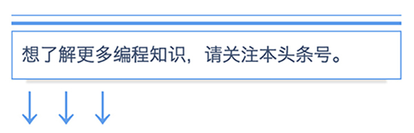

<!DOCTYPE html><html><head><meta charset="utf-8"><title>有四类人永远学不会编程？ | 技术学派</title><meta name="viewport" content="width=device-width,initial-scale=1,maximum-scale=1"><meta name="keywords" content="IT培训, Python, 大数据, 人工智能, Web前端, PHP, "><meta name="description" content="现在才开始学习编程是不是太晚了当今社会，尤其是在一线城市很多人都觉得全民都在学编程了，编程没有用武之地了，殊不知中国在软件层面才发展多少年，中国的软件产业只是处于开始阶段，有人说现在开始学习编程都找不到工作了，真的是真样嘛？毕竟现代产业都在优化，安卓、IOS刚开始盛行的时候，培训几个月先不管水平高低基本上都能找到还不错的工资，轻松拿上万工资，现在市场逐渐完善，水平可以的才能找到不错的岗位，这才是真"><meta property="og:type" content="article"><meta property="og:title" content="有四类人永远学不会编程？"><meta property="og:url" content="http://www.JiShuXuePai.com/blog/学习答疑/学习答疑/有四类人永远学不会编程？/index.html"><meta property="og:site_name" content="技术学派"><meta property="og:description" content="现在才开始学习编程是不是太晚了当今社会，尤其是在一线城市很多人都觉得全民都在学编程了，编程没有用武之地了，殊不知中国在软件层面才发展多少年，中国的软件产业只是处于开始阶段，有人说现在开始学习编程都找不到工作了，真的是真样嘛？毕竟现代产业都在优化，安卓、IOS刚开始盛行的时候，培训几个月先不管水平高低基本上都能找到还不错的工资，轻松拿上万工资，现在市场逐渐完善，水平可以的才能找到不错的岗位，这才是真"><meta property="og:locale" content="zh-CN"><meta property="og:image" content="http://www.jishuxuepai.com/blog/学习答疑/学习答疑/有四类人永远学不会编程？/IT01.jpg"><meta property="og:updated_time" content="2018-05-14T03:26:15.000Z"><meta name="twitter:card" content="summary"><meta name="twitter:title" content="有四类人永远学不会编程？"><meta name="twitter:description" content="现在才开始学习编程是不是太晚了当今社会，尤其是在一线城市很多人都觉得全民都在学编程了，编程没有用武之地了，殊不知中国在软件层面才发展多少年，中国的软件产业只是处于开始阶段，有人说现在开始学习编程都找不到工作了，真的是真样嘛？毕竟现代产业都在优化，安卓、IOS刚开始盛行的时候，培训几个月先不管水平高低基本上都能找到还不错的工资，轻松拿上万工资，现在市场逐渐完善，水平可以的才能找到不错的岗位，这才是真"><meta name="twitter:image" content="http://www.jishuxuepai.com/blog/学习答疑/学习答疑/有四类人永远学不会编程？/IT01.jpg"><link rel="stylesheet" href="/libs/bootstrap/bootstrap-grid.css"><link rel="stylesheet" href="/libs/font-awesome/css/font-awesome.min.css"><link rel="stylesheet" href="/libs/titillium-web/styles.css"><link rel="stylesheet" href="/libs/source-code-pro/styles.css"><link rel="stylesheet" href="/css/style.css"><script src="/libs/jquery/jquery.min.js"></script><link rel="stylesheet" href="/libs/lightgallery/css/lightgallery.min.css"><link rel="stylesheet" href="/libs/justified-gallery/justifiedGallery.min.css"><script>var _hmt=_hmt||[];!function(){var e=document.createElement("script");e.src="//hm.baidu.com/hm.js?4c1bd812de3c30edbaa2b803c66f0a04";var t=document.getElementsByTagName("script")[0];t.parentNode.insertBefore(e,t)}()</script></head></html><body><div id="wrap"><header id="header"><div id="header-outer" class="outer"><div class="container"><div class="container-inner"><div id="header-title"><h1 class="logo-wrap"><a href="/" class="logo"></a></h1></div><div id="header-inner" class="nav-container"><a id="main-nav-toggle" class="nav-icon fa fa-bars">菜单</a><div class="nav-container-inner"><ul id="main-nav"><li class="main-nav-list-item"><a class="main-nav-list-link" href="/">主页</a></li><li class="main-nav-list-item"><a class="main-nav-list-link" href="/edu/index.html">学编程</a></li><li class="main-nav-list-item"><a class="main-nav-list-link" href="/blog/">博客</a></li><li class="main-nav-list-item"><a class="main-nav-list-link" href="/tips.html">学习建议</a></li><li class="main-nav-list-item"><a class="main-nav-list-link" href="/about.html">关于</a></li></ul><nav id="sub-nav"><div id="search-form-wrap"><form class="search-form"><input type="text" class="ins-search-input search-form-input" placeholder="搜索"> <button type="submit" class="search-form-submit"></button></form><div class="ins-search"><div class="ins-search-mask"></div><div class="ins-search-container"><div class="ins-input-wrapper"><input type="text" class="ins-search-input" placeholder="想要查找什么..."> <span class="ins-close ins-selectable"><i class="fa fa-times-circle"></i></span></div><div class="ins-section-wrapper"><div class="ins-section-container"></div></div></div></div><script>window.INSIGHT_CONFIG={TRANSLATION:{POSTS:"文章",PAGES:"页面",CATEGORIES:"分类",TAGS:"标签",UNTITLED:"(未命名)"},ROOT_URL:"/",CONTENT_URL:"/content.json"}</script><script src="/js/insight.js"></script></div></nav></div></div></div></div></div></header><div class="container"><div class="main-body container-inner"><div class="main-body-inner"><section id="main"><div class="main-body-header"><h1 class="header"><a class="page-title-link" href="/categories/学习答疑/">学习答疑</a><div class="author">张桐硕</div></h1></div><div class="main-body-content"><article id="post-学习答疑/有四类人永远学不会编程？" class="article article-single article-type-post" itemscope itemprop="blogPost"><div class="article-inner"><header class="article-header"><h1 class="article-title" itemprop="name">有四类人永远学不会编程？</h1></header><div class="article-meta"><div class="article-date"><a href="/blog/学习答疑/学习答疑/有四类人永远学不会编程？/" class="article-date"><time datetime="2018-05-09T14:59:22.617Z" itemprop="datePublished">2018-05-09</time></a></div></div><div class="article-entry" itemprop="articleBody"><h2 id="现在才开始学习编程是不是太晚了"><a href="#现在才开始学习编程是不是太晚了" class="headerlink" title="现在才开始学习编程是不是太晚了"></a>现在才开始学习编程是不是太晚了</h2><p>当今社会，尤其是在一线城市很多人都觉得全民都在学编程了，编程没有用武之地了，殊不知中国在软件层面才发展多少年，中国的软件产业只是处于开始阶段，有人说现在开始学习编程都找不到工作了，真的是真样嘛？<br></p><p>毕竟现代产业都在优化，安卓、IOS刚开始盛行的时候，培训几个月先不管水平高低基本上都能找到还不错的工资，轻松拿上万工资，现在市场逐渐完善，水平可以的才能找到不错的岗位，这才是真正的市场行情物以稀为贵嘛。毕竟实力不行还能轻松找到工作属于市场前期，绝大部分还是要靠自身强大的技术实力。<br><br>在这给大家传授一些心得，目前市面上培训公司宣传最火热的语言或者行业一定是目前比较好就业的工作，培训公司一般是选择一些短平快的行业或者语言来作为市场的切入点。作为初学者把握住这点，就能明白很多理。为啥很多人喊着C语言不行了，是真的不行了嘛，C语言几乎是所有语言的祖师爷，你能说老祖宗不行了？肯定不是。C语言相对来说入门不是那么轻松，而且达到就业的水准需要真懂这门语言，这种语言其实对于零基础的小白来说，确实在学习上有一定的难度，目前市面上也很少有培训机构喜欢做，废了很多劲把人培训出来还很有可能找不到工作，出力不讨好的事情没有人愿意做，所以直接培训C语言并不是一个明智的选择。所以学习编程要懂得体味市场行情。</p><h2 id="有四类人永远学不会编程？"><a href="#有四类人永远学不会编程？" class="headerlink" title="有四类人永远学不会编程？"></a>有四类人永远学不会编程？</h2><h3 id="1-专注力不够，没有一颗持之以恒的心"><a href="#1-专注力不够，没有一颗持之以恒的心" class="headerlink" title="1.专注力不够，没有一颗持之以恒的心"></a>1.专注力不够，没有一颗持之以恒的心</h3><p><br>有很多人开始学编程热度很强，刚刚入门时候相对比较简单觉得写代码这就是这么回事，慢慢就会有点小浮躁了，到了后边学到难理解的，又开始怀疑人生。基本上来回几下就被弄得焦头烂额了，其实编程的过程就是折腾的过程，没有折腾学不到的真本事。如果一个人做什么事情都是3分钟热度，那么你会发现他永远在不断的找工作、不断的更换行业。</p><blockquote><p>建议：学习编程一定要有相对的耐心和定力，正在自学的或者想学编程的准备好这份耐心了没。</p></blockquote><h3 id="2-没有一个良好的学习习惯的人"><a href="#2-没有一个良好的学习习惯的人" class="headerlink" title="2.没有一个良好的学习习惯的人"></a>2.没有一个良好的学习习惯的人</h3><p><br>大多数想学习编程的同学，最初的学习方式基本上都是去下载很多的学习资料，大量的视频和电子书，很多很多个G。然后搞一个视频就开始了自己编程学习之路，看了一段时间有点听不懂了，换个视频继续，又遇到不懂得，开始电子书的学习之路。这样下去基本上几个月过去了，弄得自己思维都乱了方寸。其实，对一个初学者来说，学习资料用处并不是最大的，而是需要有一个懂行的人帮你梳理思路，并引导你在学习的过程中可以主动去思考问题的过程。</p><blockquote><p>建议：学习编程基本上需要制定一个学习大纲，这个学习大纲需要规划好时间和目标，以书本为主线，视频为辅助，并且有一个懂行的人在旁辅导，这样更容易养成良好的学习方法和学习习惯。</p></blockquote><h3 id="3-只说不做的人"><a href="#3-只说不做的人" class="headerlink" title="3.只说不做的人"></a>3.只说不做的人</h3><p><br>编程是一个熟能生巧的工种，不动手去写代码啥也搞不定，每天只是通过看文章和视频就想学会一门编程语言是不可能的，更别异想天开的想做属于自己的产品了，实践不是对着视频把代码在电脑上敲上一遍就搞定了，而是需要自己独立去完成书本上或者视频上的代码，还要学会举一反三。这只是完成了最基本的一些实践，等最基本的实践完成后还可以玩的再高深一点，要知道从哪里搞到实践项目，在学习过程中搞点实际项目也不是很现实，但是可以拿一些真正项目实践过的代码去分析去研究，最适合这种的就是开源社区中的代码了，初次做开源可能很多人觉得要学的东西太多了，感觉自己像是白痴，这属于正常现象，谁不是从白痴开始的呐，要懂得善假于物。先去尝试看懂代码然后再去尝试修改代码，一步一个脚印编程功底就这样慢慢积累出来了。</p><blockquote><p>建议：一定要去实践，还要知道如何实践，找到身边从事相关行业的朋友多要些真实项目去分析，我相信每个同学身边都会有那么几个程序猿的朋友。</p></blockquote><h3 id="4-总给自己找理由的人"><a href="#4-总给自己找理由的人" class="headerlink" title="4.总给自己找理由的人"></a>4.总给自己找理由的人</h3><p><br>在学习编程的过程中难免会有些枯燥乏味，所以要讲究点策略，或者找点什么能够激励下自己。其实我们可以找点榜样得力量，这就是为什么要找个带自己的，起码在心理有个期盼会觉得什么时候能达到像谁一样厉害，有时候榜样的力量是很强大的，所以在学习过程中要设置一个这样的榜样，很多人说了茫茫人海去哪找自己的榜样。现在这么多写技术博客的大牛或者做自媒体的高手，总能找到热心并且愿意帮助你的人，只要你真的用心去做就一定可以做到，而不是一味的要去寻找不去做的理由。</p><blockquote><p>建议：找到自己学习的标杆，打造属于自己的知识体系，编程细节繁多，如何把这些零散的东西穿插起来需要一个体系开支撑，这就是常说的知识体系。</p></blockquote><p>很多人会问如果按照你的建议去做不止是编程能学会，别的也一样可以学会了，答案是：是的。如果真能做到我建议中提到的几点，那么编程一定能够学的很好。</p><h3 id="最后送给大家一碗鸡汤：生命太过短暂，今天放弃了明天不一定能得到，学习新东西就需要有只争朝夕的魄力。"><a href="#最后送给大家一碗鸡汤：生命太过短暂，今天放弃了明天不一定能得到，学习新东西就需要有只争朝夕的魄力。" class="headerlink" title="最后送给大家一碗鸡汤：生命太过短暂，今天放弃了明天不一定能得到，学习新东西就需要有只争朝夕的魄力。"></a>最后送给大家一碗鸡汤：生命太过短暂，今天放弃了明天不一定能得到，学习新东西就需要有只争朝夕的魄力。</h3><p><br><a href="http://www.jishuxuepai.com/">了解更多</a></p></div><footer class="article-footer"><a data-url="http://www.JiShuXuePai.com/blog/学习答疑/学习答疑/有四类人永远学不会编程？/" data-id="cjhr4tw3c0032zifye18qysiw" class="article-share-link"><i class="fa fa-share"></i>分享到</a><script>!function(n){n("body").on("click",function(){n(".article-share-box.on").removeClass("on")}).on("click",".article-share-link",function(t){t.stopPropagation();var e,a=n(this),o=a.attr("data-url"),r=encodeURIComponent(o),i="article-share-box-"+a.attr("data-id"),s=a.offset();if(n("#"+i).length){if((e=n("#"+i)).hasClass("on"))return void e.removeClass("on")}else{var l=['<div id="'+i+'" class="article-share-box">','<input class="article-share-input" value="'+o+'">','<div class="article-share-links">','<a href="https://twitter.com/intent/tweet?url='+r+'" class="article-share-twitter" target="_blank" title="Twitter"></a>','<a href="https://www.facebook.com/sharer.php?u='+r+'" class="article-share-facebook" target="_blank" title="Facebook"></a>','<a href="http://pinterest.com/pin/create/button/?url='+r+'" class="article-share-pinterest" target="_blank" title="Pinterest"></a>','<a href="https://plus.google.com/share?url='+r+'" class="article-share-google" target="_blank" title="Google+"></a>',"</div>","</div>"].join("");e=n(l),n("body").append(e)}n(".article-share-box.on").hide(),e.css({top:s.top+25,left:s.left}).addClass("on")}).on("click",".article-share-box",function(t){t.stopPropagation()}).on("click",".article-share-box-input",function(){n(this).select()}).on("click",".article-share-box-link",function(t){t.preventDefault(),t.stopPropagation(),window.open(this.href,"article-share-box-window-"+Date.now(),"width=500,height=450")})}(jQuery)</script></footer></div></article><section id="comments"><div id="gitalk_frame"></div></section></div></section><aside id="sidebar"><a class="sidebar-toggle" title="Expand Sidebar"><i class="toggle icon"></i></a><div class="sidebar-top"><p>关注我 :</p><ul class="social-links"><li><a class="social-tooltip" title="火星时代" href="http://edu.hxsd.com/edunew/topics/webfull/index.html" target="_blank"><i class="icon fa fa-dribbble"></i></a></li><li><a class="social-tooltip" title="weibo" href="#" target="_blank"><i class="icon fa fa-weibo"></i></a></li><li><a class="social-tooltip" title="rss" href="/atom.xml" target="_blank"><i class="icon fa fa-rss"></i></a></li></ul></div><nav id="article-nav"><a href="/blog/学习答疑/学习答疑/吐槽大会程序员版/" id="article-nav-newer" class="article-nav-link-wrap"><strong class="article-nav-caption">下一篇</strong><p class="article-nav-title">吐槽大会(程序猿版)</p><i class="icon fa fa-chevron-right" id="icon-chevron-right"></i> </a><a href="/blog/学习答疑/学习答疑/零基础入门学习什么编程语言比较合适？/" id="article-nav-older" class="article-nav-link-wrap"><strong class="article-nav-caption">上一篇</strong><p class="article-nav-title">零基础入门学习什么编程语言比较合适？</p><i class="icon fa fa-chevron-left" id="icon-chevron-left"></i></a></nav><div class="widgets-container"><div class="widget-wrap widget-list"><h3 class="widget-title">分类</h3><div class="widget"><ul class="category-list"><li class="category-list-item"><a class="category-list-link" href="/categories/animate/">animate</a><span class="category-list-count">17</span></li><li class="category-list-item"><a class="category-list-link" href="/categories/git/">git</a><span class="category-list-count">1</span></li><li class="category-list-item"><a class="category-list-link" href="/categories/html/">html</a><span class="category-list-count">2</span></li><li class="category-list-item"><a class="category-list-link" href="/categories/js/">js</a><span class="category-list-count">5</span></li><li class="category-list-item"><a class="category-list-link" href="/categories/php/">php</a><span class="category-list-count">3</span></li><li class="category-list-item"><a class="category-list-link" href="/categories/vue/">vue</a><span class="category-list-count">1</span></li><li class="category-list-item"><a class="category-list-link" href="/categories/学习答疑/">学习答疑</a><span class="category-list-count">15</span></li><li class="category-list-item"><a class="category-list-link" href="/categories/插件资源库/">插件资源库</a><span class="category-list-count">4</span></li></ul></div></div><link rel="stylesheet" href="/css/tech/toc.css"><div class="widget-wrap widget-list widget-toc"><h3 class="widget-title">目录</h3><div class="widget"><div class="toc"></div><link rel="stylesheet" href="https://cdnjs.cloudflare.com/ajax/libs/tocbot/3.0.5/tocbot.css"><script src="https://cdnjs.cloudflare.com/ajax/libs/tocbot/3.0.5/tocbot.min.js"></script><script>$(function(){$(".main-body-content").find("h1,h2,h3").each(function(t){$(this).attr("id")||$(this).attr("id","list"+t)}),tocbot.init({tocSelector:".toc",contentSelector:".main-body-content",headingSelector:"h1, h2, h3",collapseDepth:2,positionFixedSelector:".widget-toc",fixedSidebarOffset:595,includeHtml:!1})})</script></div></div><div class="widget-wrap widget-list"><h3 class="widget-title">标签</h3><div class="widget"><ul class="tag-list"><li class="tag-list-item"><a class="tag-list-link" href="/tags/C/">C</a><span class="tag-list-count">1</span></li><li class="tag-list-item"><a class="tag-list-link" href="/tags/python/">python</a><span class="tag-list-count">6</span></li><li class="tag-list-item"><a class="tag-list-link" href="/tags/web前端/">web前端</a><span class="tag-list-count">2</span></li></ul></div></div><div class="widget-wrap widget-float"><h3 class="widget-title">标签云</h3><div class="widget tagcloud"><a href="/tags/C/" style="font-size:10px">C</a> <a href="/tags/python/" style="font-size:20px">python</a> <a href="/tags/web前端/" style="font-size:15px">web前端</a></div></div><div class="widget-wrap widget-list"><h3 class="widget-title">链接</h3><div class="widget"><ul><li><a href="http://edu.hxsd.com/edunew/topics/webfull/index.html">火星时代</a></li></ul></div></div></div></aside><script>$(function(){$(window).scroll(function(){240<=$(document).scrollTop()?($("#sidebar .sidebar-toggle").addClass("fix"),"block"==$("#sidebar .sidebar-toggle").css("display")&&$(".is-position-fixed").css("top","35px")):$("#sidebar .sidebar-toggle").removeClass("fix")})})</script></div></div></div><footer id="footer"><div class="top"><div class="inner"><div class="list"><div class="left clearfix"><dl><dt>关于我们</dt><dd><a href="/about.html" target="_blank">公司简介</a></dd><dd><a href="edu/index.html" target="_blank">联系我们</a></dd></dl><dl><dt>校区攻略</dt><dd><a href="edu/index.html" target="_blank">校区环境</a></dd><dd><a href="edu/index.html" target="_blank">住宿攻略</a></dd><dd><a href="edu/index.html" target="_blank">来校路线</a></dd></dl><dl><dt>课程培训</dt><dd><a href="edu/python.html" target="_blank">Python</a></dd><dd><a href="edu/python.html" target="_blank">Web前端</a></dd><dd><a href="edu/python.html" target="_blank">PHP</a></dd><dd><a href="edu/python.html" target="_blank">人工智能</a></dd><dd><a href="edu/python.html" target="_blank">大数据</a></dd></dl><dl><dt>常见问答</dt><dd><a href="edu/index.html" target="_blank">学费学时</a></dd><dd><a href="edu/index.html" target="_blank">学习方法</a></dd></dl></div></div><div class="tel"><tel>176-0025-8815</tel><span>北京市海淀区杏石口路81号火星时代大厦</span></div><div class="weixin"><div class="w1"> <span>头条号</span></div><div class="w1"> <span>官方微信</span></div></div></div></div><div class="bot">Copyright 2018 技术学派 京ICP备15015508号-3</div></footer><link rel="stylesheet" href="https://unpkg.com/gitalk/dist/gitalk.css"><script src="https://unpkg.com/gitalk/dist/gitalk.min.js"></script><script>var gitalk=new Gitalk({clientID:"2fbbb9980b49019d99a7",clientSecret:"152dd10e83ef6595761ea2185304f9ac8263573f",repo:"jsxp",owner:"li-kang",admin:["li-kang"]});gitalk.render("gitalk_frame")</script><script src="/libs/lightgallery/js/lightgallery.min.js"></script><script src="/libs/lightgallery/js/lg-thumbnail.min.js"></script><script src="/libs/lightgallery/js/lg-pager.min.js"></script><script src="/libs/lightgallery/js/lg-autoplay.min.js"></script><script src="/libs/lightgallery/js/lg-fullscreen.min.js"></script><script src="/libs/lightgallery/js/lg-zoom.min.js"></script><script src="/libs/lightgallery/js/lg-hash.min.js"></script><script src="/libs/lightgallery/js/lg-share.min.js"></script><script src="/libs/lightgallery/js/lg-video.min.js"></script><script src="/libs/justified-gallery/jquery.justifiedGallery.min.js"></script><script src="/js/main.js"></script></div></body>